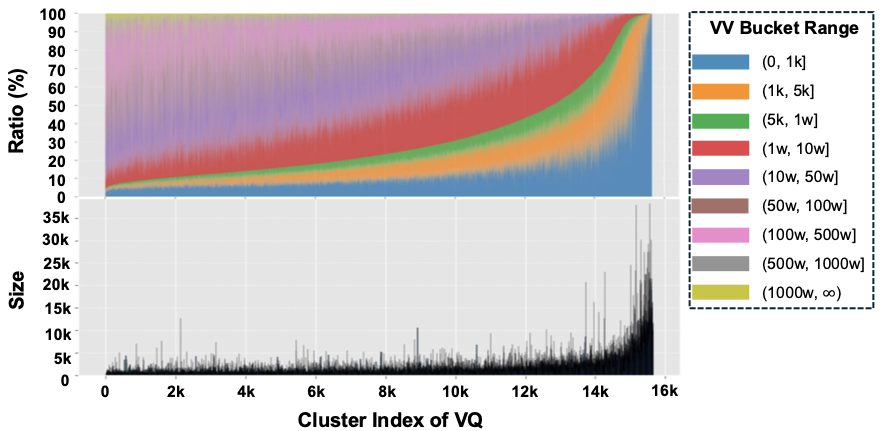
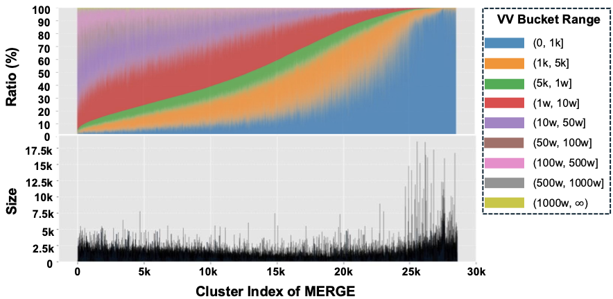
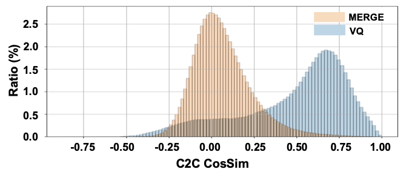
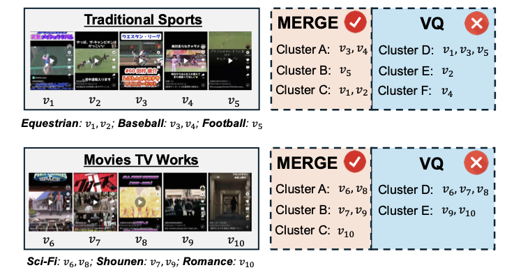

MERGE: Next-Generation Item Indexing Paradigm for Large-Scale Streaming Recommendation
Подробное саммари статьи:
Авторы: Jing Yan, Yimeng Bai, Zongyu Liu, Yahui Liu, Junwei Wang, Jingze Huang, Haoda Li, Sihao Ding, Shaohui Ruan, Yang Zhang.
Аффилиации: ByteDance; National University of Singapore.
1. Коротко: о чем статья
MERGE предлагает заменить классический VQ-based item indexing на динамическую streaming-native парадигму. Вместо фиксированного codebook'а, куда каждый item принудительно назначается ближайшему centroid'у, MERGE строит clusters from scratch, проверяет качество assignment по threshold, создает новые clusters из unmatched items, мониторит occupancy и затем объединяет fine clusters в coarse hierarchical index.
Главная критика статьи: Vector Quantization плохо подходит для industrial streaming recommendation, где item distribution сильно skewed, постоянно меняется, а feedback loops могут усиливать ошибки. VQ forced assignment приводит к трем проблемам:
- Accuracy. Item может быть слабо похож на назначенный cluster.
- Uniformity. Cluster sizes становятся сильно несбалансированными.
- Separation. Cluster embeddings плохо отделены друг от друга, что делает assignments нестабильными.
MERGE показывает улучшения offline по этим трем измерениям и online в A/B test внутри Trinity-style retrieval pipeline.
2. Контекст: что такое item indexing
Item indexing, или item tokenization, отображает item embeddings в компактные дискретные представления:
Такой индекс нужен в двух типах систем:
- traditional retrieval: индекс позволяет быстро доставать candidates из огромного каталога;
- generative recommendation: индекс становится token space, где recommender генерирует item как sequence of tokens.
В traditional retrieval часто достаточно одного или двух уровней clusters, где множество item'ов делят один cluster. В generative recommendation длина обычно больше, например 3-4 tokens, и часто в конец добавляется unique token, чтобы обеспечить one-to-one mapping между generated sequence и item.
3. Почему VQ плохо работает в streaming recommendation
Single-layer VQ задает codebook фиксированного размера:
Каждый item embedding e_i назначается ближайшему codeword:
Проблема в слове "назначается": VQ обычно не имеет права отказать item'у в плохом assignment. Даже если ближайший cluster все равно далек, item будет куда-то помещен.
В industrial stream это приводит к:
- clusters, в которых item'ы слабо похожи на cluster center;
- гигантским clusters в популярных областях или вокруг noisy long-tail;
- слишком похожим codewords, между которыми item может перескакивать при небольших обновлениях embedding'а;
- нестабильному retrieval behavior из-за feedback loops.
Авторы сообщают, что для single-layer VQ средняя item-to-cluster cosine similarity около 0.6, а average inter-cluster cosine similarity превышает 0.5. Для production indexing это плохой сигнал: clusters одновременно неточные и плохо разделенные.
4. Общая идея MERGE
MERGE строится вокруг трех механизмов:
- Dynamic cluster construction: item назначается cluster'у только если similarity выше threshold; иначе он участвует в создании новых clusters.
- Real-time occupancy monitoring: clusters с плохой occupancy reset'ятся, чтобы поддерживать баланс и освобождать capacity.
- Fine-to-coarse merging: стабильные fine-grained clusters объединяются в coarse codebook, образуя hierarchical index.

В отличие от VQ, MERGE не начинает с заранее заданного числа clusters. Codebook size динамически меняется по мере обработки stream.
5. Dynamic Cluster Construction
На каждом update step MERGE получает batch items B. Каждый item представлен 64-dimensional collaborative embedding, полученным из retriever model. Codebook Q = {q_k}_{k=1..K} изначально пуст и постепенно развивается.
Чтобы batch был менее noisy, авторы используют tag-based batch formation: все item'ы в batch имеют один prior tag из 100 multimodal categories. Это ускоряет convergence и делает cluster formation стабильнее.
5.1. Step 1: Similarity computation
Для каждого item embedding e_i считается cosine similarity ко всем existing codewords:
Cosine similarity выбран потому, что он хорошо работает эмпирически и удобно задает threshold в диапазоне от -1 до 1.
5.2. Step 2: Matching decision
Если best similarity выше threshold tau, item успешно matched:
Это один из ключевых отличий от VQ. MERGE имеет явное множество failed-to-match items и не делает blind assignment.
5.3. Step 3: Cluster update через EMA
Для каждого cluster q_k хранятся две EMA variables:
S_k- EMA суммы embeddings, назначенных cluster'у;N_k- EMA количества item'ов в cluster.
EMA позволяет cluster embedding адаптироваться к новым данным, но не дергаться слишком резко.
5.4. Step 4: Cluster extension через Union-Find
Items из B- не были похожи на existing clusters. MERGE пытается сформировать из них новые clusters. Для этого:
- считаются pairwise similarities между failed items;
- пары с similarity выше
tau'соединяются; - Union-Find строит connected components;
- component становится valid cluster, если ее size не меньше
m; - cluster embedding получается mean-pooling'ом embeddings внутри component.
Поскольку эти clusters создаются из items, которые не matched к existing codewords, они естественно отделены от старого codebook'а.
5.5. Step 5: Fill-Then-Append и item recycling
Valid clusters добавляются в codebook через Fill-Then-Append operator:
- сначала заполняются reset/zeroed slots в
Q; - если valid clusters больше, чем свободных slots, оставшиеся append'ятся в конец;
- items, которые не образовали valid cluster, возвращаются в data queue.
Recycling важен для long tail: одиночный rare item не создает шумный cluster сразу, но может дождаться похожих item'ов в будущих batches.
6. Real-Time Occupancy Monitoring
MERGE отслеживает occupancy каждого cluster через EMA-count N_k. Cluster может быть в одном из трех статусов:
Stable clusters сохраняются. Underfilled clusters reset'ятся: embedding и EMA variables обнуляются, а связанные item mappings очищаются. Growing clusters получают monitoring window M; если за M steps они не становятся stable, их тоже reset'ят.
Это решает две production-проблемы:
- codebook не засоряется мелкими неустойчивыми clusters;
- capacity переиспользуется для новых patterns в stream.
7. Fine-to-Coarse Merging
MERGE строит hierarchical index {P, Q}, где Q - fine-grained codebook, а P - coarse-grained codebook.
7.1. Merging
Для пары prototypes p_x и p_y задается affinity:
Вторая часть штрафует merge крупных clusters и тем самым поддерживает uniformity. Пара с максимальным affinity объединяется count-weighted average:
7.2. Pruning и reconnection
После merge для prototypes внутри merged cluster считается silhouette coefficient. Плохо вписывающиеся prototypes удаляются. Затем pruned prototypes и unmerged prototypes возвращаются в merge process. Процесс повторяется до достижения target number of coarse clusters.
В статье используется два уровня {P, Q}, хотя идею можно рекурсивно применять дальше.
8. Implementation details
Из appendix:
- item embeddings: 64-dimensional collaborative embeddings from retriever;
- batch size:
20,480; - после convergence fine-grained codebook содержит десятки тысяч valid clusters;
- cluster assignment threshold
tau = 0.88; - EMA decay
gamma = 0.9993; - Union-Find threshold
tau' = 0.83; - large-cluster penalty
lambda = 0.01; - monitoring window
M = 80; - minimum valid cluster size
m = 4; - occupancy thresholds
epsilon_1 = 0.25,epsilon_2 = 0.2644.
9. Offline evaluation
Авторы оценивают MERGE на platform-specific industrial streaming data, а не на публичных датасетах. Объем candidates - порядка сотен миллионов. Stream строится так, что candidates подаются sequentially с equal probability; это лучше подходит для обучения item indexing, чем popularity-biased impression stream.
Baseline - StreamingVQ, который в статье далее называется просто VQ. Это single-codebook VQ method, уже validated at scale.
9.1. Accuracy: item-to-cluster similarity
Метрика: cosine similarity между item embedding и assigned cluster embedding, I2C CosSim. MERGE получает среднее около 0.9, VQ - около 0.6.
Интерпретация: VQ часто назначает item'ы в плохо подходящие clusters, потому что forced assignment неизбежен. MERGE назначает item к existing cluster только при достаточной confidence.

9.2. Uniformity: cluster size balance
MERGE дает более равномерное распределение cluster sizes. В статье приводится характерное сравнение:
- largest MERGE cluster: около 17,500 items;
- largest VQ cluster: около 40,000 items.
Дополнительный анализ по VV buckets показывает, что VQ склонен слипать low-VV videos, тогда как MERGE распределяет их равномернее. Это важный production-effect: long-tail candidates получают больше шансов быть retrieved.


9.3. Separation: cluster-to-cluster similarity
Метрика: pairwise cosine similarity между cluster embeddings, C2C CosSim. MERGE дает distribution с mean около нуля. У VQ mean около 0.6.
Это значит, что MERGE clusters лучше отделены друг от друга. Для streaming system это снижает assignment instability: если два codewords почти одинаковые, item может легко перескочить между ними при небольшом perturbation embedding'а.

10. Online deployment
MERGE внедряется в Trinity-style pipeline. Оригинальная Trinity использует VQ для two-level clustering и строит statistical interest histograms пользователя. Авторы заменяют VQ-based indexing на MERGE.
Serving pipeline:
- извлекается long-term behavior sequence пользователя;
- по item-cluster mapping строится histogram of cluster distributions;
- выбираются top/ranked clusters согласно retrieval strategy;
- по cluster-item mapping достаются candidate videos;
- candidates идут в reranker, pre-ranking, ranking и последующие stages.

11. A/B test: core metrics
A/B test длился одну неделю. Control group использовала Trinity with VQ, treatment group - Trinity with MERGE. Масштаб - миллионы пользователей. Все core engagement gains статистически значимы на 5% level.
| Aspect | Metric | Relative change |
|---|---|---|
| Engagement | AAD | +0.0081% |
| Engagement | AAH | +0.0546% |
| Engagement | WatchTime | +0.1006% |
| VV stratification | (0, 1k] | +1.49% |
| VV stratification | (1k, 5k] | +11.07% |
| VV stratification | (5k, 10k] | +11.87% |
| VV stratification | (10k, 100k] | +2.25% |
| VV stratification | (100k, infinity) | -2.65% |
| Freshness | (0, 2h] | +0.59% |
| Freshness | (2h, 12h] | +7.64% |
| Freshness | (12h, 24h] | -0.29% |
| Freshness | (24h, 72h] | -1.88% |
| Diversity | TagNum | +0.22% |
| Diversity | TagGini | -0.03% |
Engagement gains в процентах выглядят небольшими, но для системы с billions of daily users даже такие сдвиги практически значимы. Более содержательный сигнал - перераспределение exposure: MERGE увеличивает показы low/mid-VV контента и fresh content в bucket 2-12h.
12. A/B test: single-path metrics
Авторы отдельно анализируют один Trinity retrieval path, чтобы понять, как MERGE влияет на candidates, пришедшие именно из этого пути.
| Aspect | Metric | Relative change |
|---|---|---|
| Survivability | Pass-Through Rate | +45.04% |
| Contribution | Output Ratio | +85.99% |
| Contribution | Unique Output Ratio | +26.36% |
| Action | Staytime | +9.84% |
| Action | Like | +8.78% |
| Action | Follow | +17.32% |
| Action | Share | +7.65% |
| Action | Comment | +39.43% |
Эта таблица показывает сильный локальный эффект: candidates из MERGE path чаще переживают downstream ranking, сильнее представлены в final output и вызывают больше user actions.
13. Case study
Авторы берут примерно 1000 candidate videos для request, затем hard tag-based search фильтрует их до примерно 100 videos общей темы. После этого сравнивается, в какие clusters попадают videos при MERGE и VQ. Используются темы вроде Traditional Sports и Movies TV Works.
MERGE группирует semantically coherent videos компактнее: baseball videos попадают к baseball, equestrian к equestrian, sci-fi к sci-fi, shounen к shounen. VQ чаще фрагментирует похожие videos по разным clusters или смешивает разные темы.

14. Почему MERGE работает
В терминах трех проблем VQ:
- Accuracy. Threshold-based assignment не допускает слабых item-cluster matches. EMA update держит cluster embedding близко к текущим members.
- Uniformity. Occupancy monitoring reset'ит underfilled/growing clusters и предотвращает extreme skew.
- Separation. New clusters создаются из items, которые не matched к старым clusters, поэтому они естественно добавляют новые distinct regions.
- Lower error accumulation. Fine-to-coarse merging строит hierarchy из уже стабильных fine clusters, а не через residual quantization с накоплением ошибок.
15. Сильные стороны статьи
- Production-oriented formulation. Accuracy, uniformity и separation - понятные operational metrics, которые реально можно мониторить.
- Streaming-native design. EMA, recycling, occupancy monitoring и dynamic cluster creation естественно подходят для non-stationary catalogs.
- Online validation. Есть A/B test, а не только offline retrieval/reconstruction metrics.
- Хорошая критика VQ. Статья показывает, что проблема не только в размере codebook'а, а в самой forced-assignment paradigm.
16. Ограничения и вопросы
- Нет публичного dataset. Industrial focus понятен, но независимая воспроизводимость ограничена.
- Метод сложнее VQ. Нужно поддерживать thresholds, reset states, recycling queue, Union-Find clustering, merge/prune/reconnect.
- Много domain-specific эвристик. Tag-based batching, thresholds и occupancy windows могут требовать серьезной настройки в другом домене.
- Пока не generative retrieval. Авторы прямо пишут, что текущее применение ограничено traditional retrieval, а использование MERGE для generative retrieval - future work.
17. Связь с semantic IDs и generative recommendation
Хотя MERGE тестируется в traditional retrieval, его идеи напрямую релевантны semantic IDs:
- fine clusters можно использовать как semantic tokens;
- coarse-to-fine structure можно превратить в hierarchical item ID;
- occupancy и separation metrics можно использовать как diagnostics для tokenizer quality;
- dynamic cluster creation особенно важен для fresh/cold items в streaming catalogs.
Потенциальный hybrid:
coarse MERGE cluster token
+ fine MERGE cluster token
+ residual semantic tokens
+ optional unique disambiguation tokenТакой подход мог бы соединить production stability MERGE с generative retrieval tokenization.
18. Практические выводы
- Forced assignment - слабое место VQ. В streaming recommendation важно иметь право не назначать item в плохой cluster.
- Cluster quality нужно мерить отдельно. I2C similarity, occupancy distribution и C2C similarity дают раннюю диагностику проблем, которые downstream metrics покажут позднее.
- Long-tail exposure начинается на уровне индекса. Если indexing слипает low-VV items, ranking stage может не получить нормальных candidates.
- Freshness требует dynamic codebook. Статичный или медленно адаптирующийся VQ плохо подходит для быстро меняющегося item stream.
- Production item tokenization - это lifecycle problem. Нужно не только выучить codebook, но и поддерживать его в живом состоянии.
19. Итог
MERGE - сильная industrial paper про то, что item indexing для large-scale streaming recommendation должен быть динамическим, occupancy-aware и separation-aware. Ее главный вклад - не новая loss function для semantic tokenizer, а новая инженерная и алгоритмическая парадигма: clusters нужно не просто оптимизировать как fixed codebook, а создавать, мониторить, удалять, переиспользовать и объединять по мере жизни каталога.
Статья особенно полезна тем, кто строит retrieval/tokenization для production recommender'ов: она дает понятный набор проблем VQ, конкретный streaming design и online evidence, что улучшение качества индекса действительно проходит через весь recommendation stack до user metrics.